Genesis · Chapter 1 · Genesis 1–3
In the Beginning
The six days and the seventh, the dust of the ground and the breath of life, the garden eastward in Eden, the woman, the serpent, the fruit, and the way east of Eden.
Start reading ›Pages
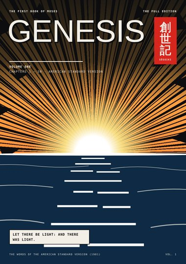
CoverCoverGenesis 1–3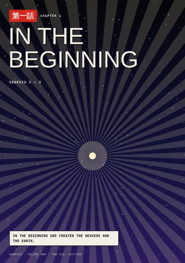
TitleChapter 1: In the BeginningGenesis 1 – 3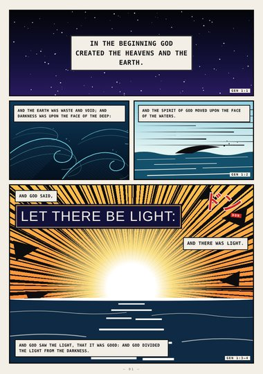
Page 1Let There Be LightGenesis 1:1–4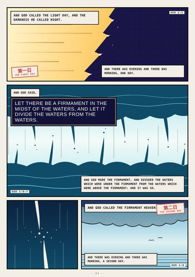
Page 2The FirmamentGenesis 1:5–8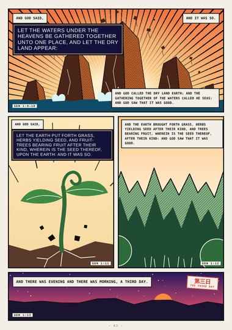
Page 3The Dry LandGenesis 1:9–13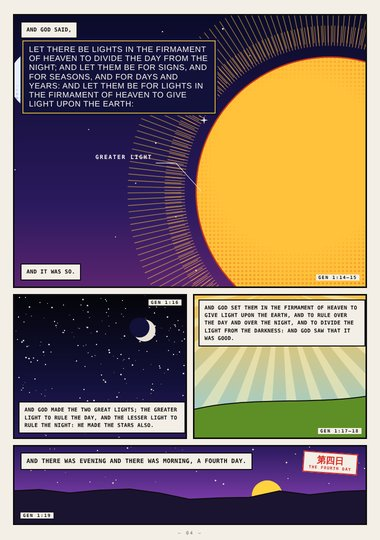
Page 4The Two Great LightsGenesis 1:14–19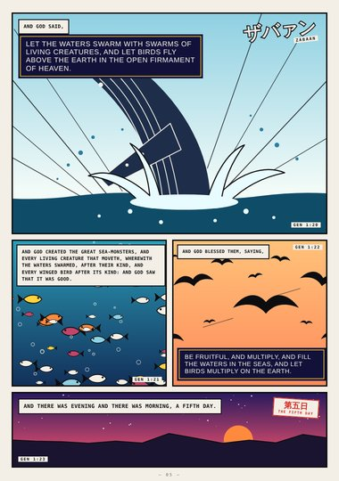
Page 5The Waters SwarmGenesis 1:20–23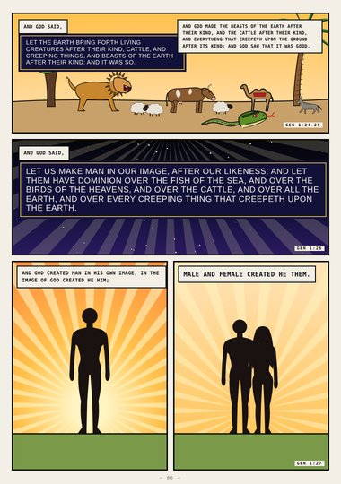
Page 6In Our ImageGenesis 1:24–27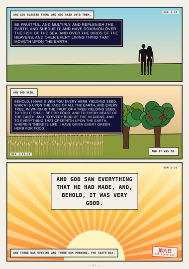
Page 7Very GoodGenesis 1:28–31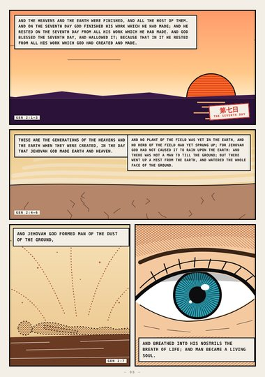
Page 8The Dust of the GroundGenesis 2:1–7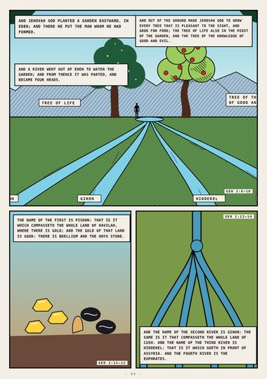
Page 9A Garden Eastward, in EdenGenesis 2:8–14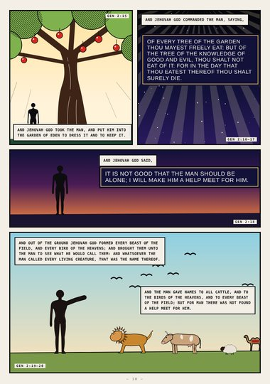
Page 10The Man Gave NamesGenesis 2:15–20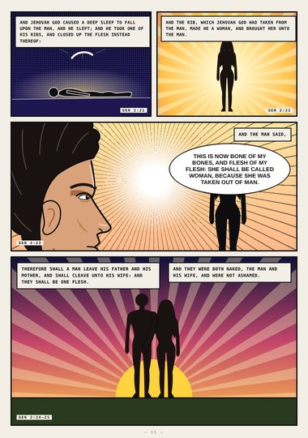
Page 11Bone of My BonesGenesis 2:21–25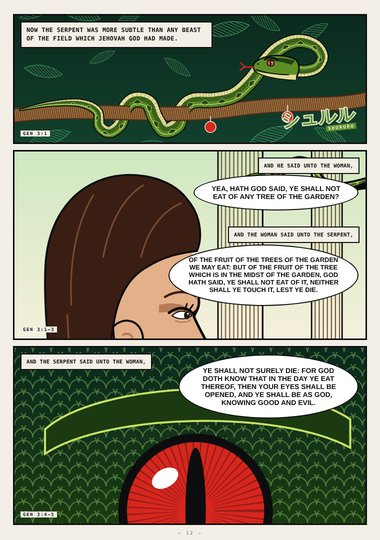
Page 12Yea, Hath God Said?Genesis 3:1–5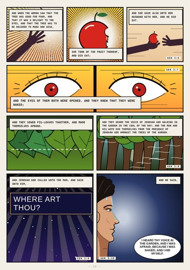
Page 13Where Art Thou?Genesis 3:6–10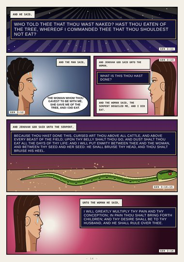
Page 14What Is This Thou Hast Done?Genesis 3:11–16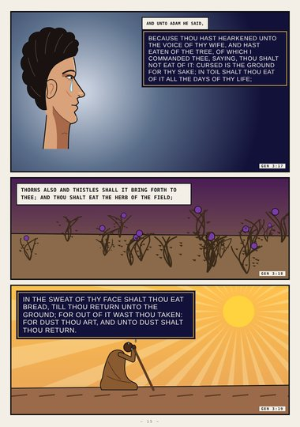
Page 15Dust Thou ArtGenesis 3:17–19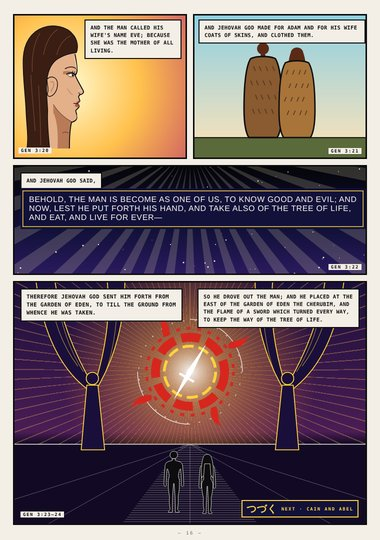
Page 16East of EdenGenesis 3:20–24